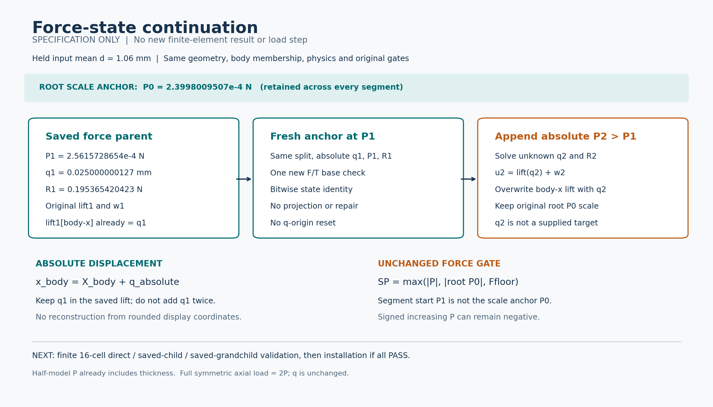

准备完成；功能尚未实现，所有新求解／F／T／HP／测试均为0，57份生产源码保持。下图是概念示意，不是新计算结果。

原位移lift已经含q；fresh原样复核，新步覆盖绝对q。P已含厚度，机构R与工件P分别报告。
| 关系 | 已明确的合同 |
|---|---|
| 当前候选父 | HIGH1成功末态；P1=0.0002561572865437846 N，q1=0.025000000126731543 mm，R1=0.19536542042269825 N。 |
| 预载与原门 | 段起点P1不替换根P0=0.0002399800950672949 N；SP=max(|P|,|root P0|,Ffloor)。 |
| 最小实现 | 候选2旧改＋1新，显式续载入口；原fixed父入口、力核／切线及其余55份生产源码保持。 |
| 下一验证 | 12方法，最多7条16单元／50场DOF真实路径；direct对两次公开续载，先小模型后正式任务。 |
| 候选窗口 | tests480／显示与QA60／helper660／outer720秒，8GiB，线程cap16；仅新卡批准后启动。 |
本轮未读取或散列NPZ内容、解包旧科学档或重开旧媒体；源科学依赖只stat。新函数及候选执行卡均未执行，不能把准备审阅PASS当作数值验证PASS。